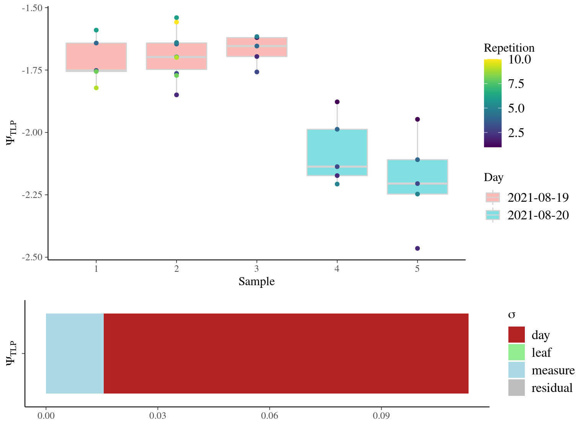
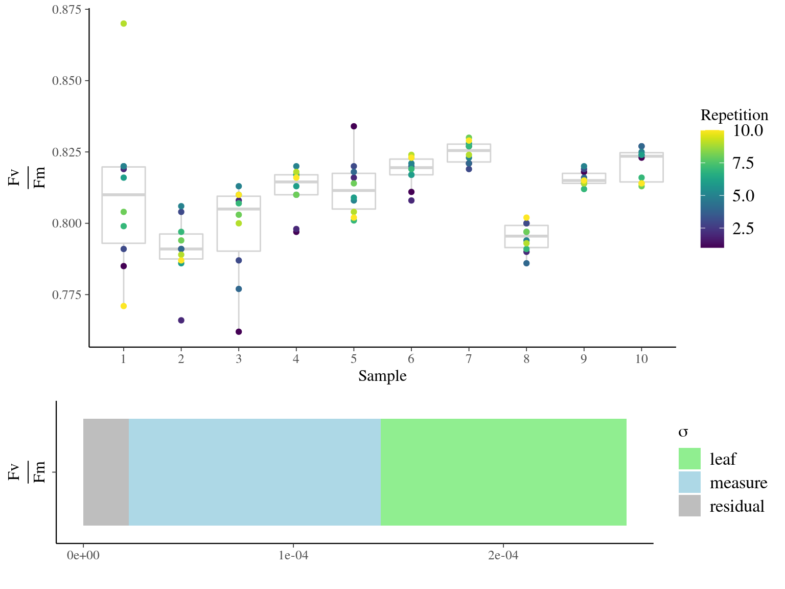
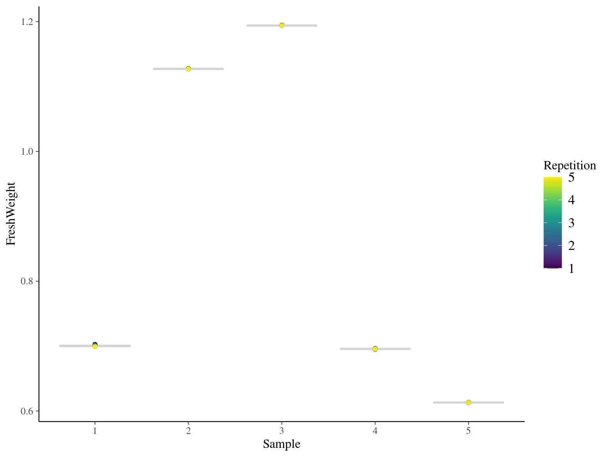
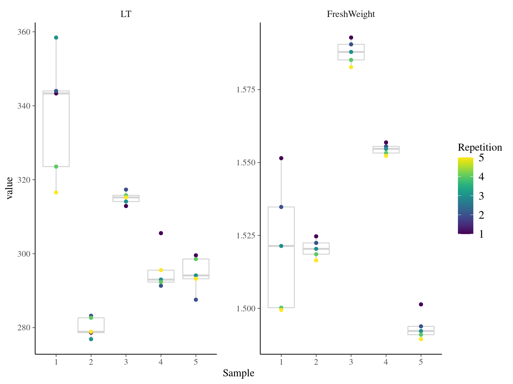

This book is in Open Review. I want your feedback to make the book better for you and other readers. To add your annotation, select some text and then click the on the pop-up menu. To see the annotations of others, click the in the upper right hand corner of the page
Chapter 4 Measurement error
Subsequent analysis aimed to explore measurement error.
4.1 \(\Psi_{TLP}\)

Figure 4.1: measurement error in \(\Psi_{TLP}\).
4.2 \(\frac{Fv}{Fm}\)

Figure 4.2: measurement error in \(\frac{Fv}{Fm}\).
4.3 \(RWC\)

Figure 4.3: measurement error in \(RWC\).
4.4 Soft traits

Figure 4.4: measurement error in soft traits.